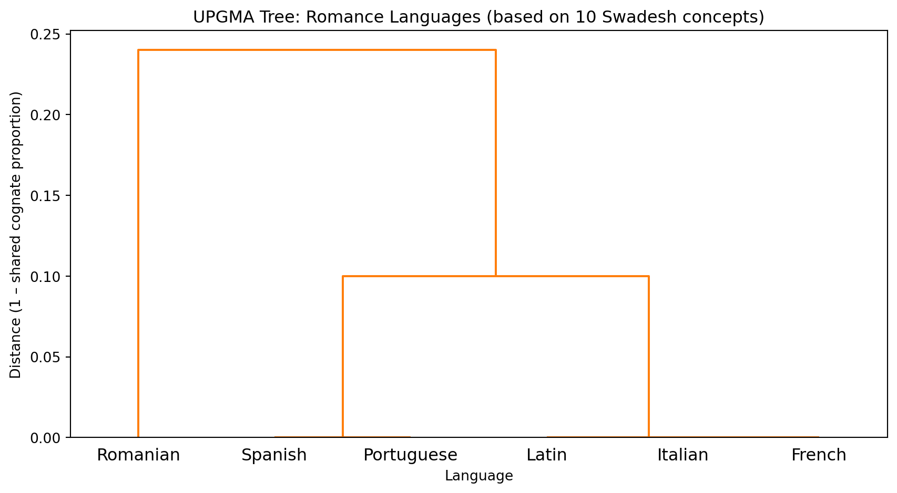
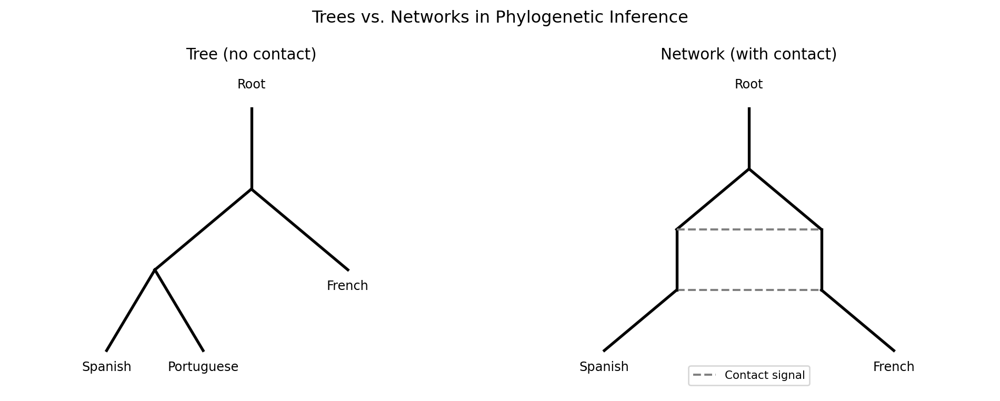

7 Phylogenetic Inference: Language Family Trees
NoteLearning Objectives
By the end of this chapter, you will be able to:
- Compute a pairwise language distance matrix from cognate data
- Apply UPGMA and Neighbor-Joining to build language family trees
- Visualize dendrogram trees and interpret their branching structure
- Evaluate a computed tree against an expert reference tree
- Understand the assumptions and failure modes of tree-based models
- Describe what bootstrap support means in the phylogenetic context
7.1 Darwin’s Table
Charles Darwin included a table in On the Origin of Species—not of species, but of languages. He had noticed the analogy before most professional linguists took it seriously: languages diversify from a common ancestor the way species do, through gradual change and geographic separation, with the survivors preserving traces of their shared origin in their vocabulary and structure.
The analogy is imperfect in illuminating ways. Species do not generally merge back together; languages do, through contact and borrowing. Species evolve through random mutation; language change is partly random but partly driven by social prestige, migration, and conquest. But the mathematical machinery of phylogenetics—developed to reconstruct evolutionary trees of life—applies to languages with appropriate modifications.
The result, applied to the world’s documented languages, produces trees that match the expert consensus with remarkable fidelity, and that sometimes reveal relationships experts had debated for decades.
7.2 Why Trees? The Case for Bifurcating Models
Before going further, it is worth asking why we model language relationships as trees at all. Real language history involves mergers (creoles, mixed languages), horizontal transfer (borrowing), geographic gradients (dialect continua), and periods of intense contact that a tree cannot represent.
The answer is pragmatic. Trees are the simplest structure that can represent the core of the historical signal: that some languages are more closely related than others. For a first approximation—and especially for basic vocabulary, which is the most resistant to borrowing—the tree assumption holds remarkably well. English and German really do share a more recent common ancestor than either shares with French. Latin really is more closely related to Spanish than to Mandarin. The tree captures these facts.
More importantly, trees are tractable. The number of possible trees for \(n\) taxa is \((2n-3)!! = 1 \times 3 \times 5 \times \ldots \times (2n-3)\), which is enormous but finite and searchable. The number of possible networks is far larger and much harder to search. We start with trees because they are computationally feasible and because they explain most of the variance in the data; we add network structure where the residuals demand it.
The analogy to linear regression is apt: you fit a line first, not because you believe the relationship is exactly linear, but because the linear approximation is useful and the residuals reveal where more complexity is warranted. The phylogenetic tree is the linear model of language history.
7.3 From Cognates to Distances
The raw material for tree inference is a distance matrix: a square matrix where entry \(d_{ij}\) is the linguistic distance between language \(i\) and language \(j\).
The most common distance measure is the proportion of non-shared cognates: if languages \(i\) and \(j\) share 60% of their basic vocabulary as cognates, their distance is \(1 - 0.60 = 0.40\).
Language distance matrix:
Spanish Portuguese Italian French Romanian Latin
Spanish 0.0 0.0 0.1 0.1 0.3 0.1
Portuguese 0.0 0.0 0.1 0.1 0.3 0.1
Italian 0.1 0.1 0.0 0.0 0.2 0.0
French 0.1 0.1 0.0 0.0 0.2 0.0
Romanian 0.3 0.3 0.2 0.2 0.0 0.2
Latin 0.1 0.1 0.0 0.0 0.2 0.07.4 Tree Building: UPGMA
The simplest tree-building method is UPGMA (Unweighted Pair Group Method with Arithmetic Mean). It is a hierarchical clustering algorithm: at each step, merge the two closest languages (or groups), then update distances by averaging.
UPGMA produces an ultrametric tree—one where all leaves are equidistant from the root. This assumes a constant rate of change across all lineages, which is often violated in practice. It is nevertheless a useful starting point.
The clustering mirrors the known historical reality: Spanish and Portuguese, which diverged relatively recently within the Iberian Peninsula, are closest. French and Italian form a second cluster. Romanian, which separated early and evolved under heavy Slavic contact, is the most isolated.
7.5 Neighbor-Joining
UPGMA is fast and intuitive but biased when mutation rates vary across lineages. Neighbor-Joining (NJ), developed by Saitou and Nei in 1987, corrects for this by using rate-corrected distances. It is the standard baseline method in computational phylogenetics.
The NJ criterion selects, at each step, the pair of taxa whose joining most reduces the total branch length of the resulting tree—a minimum-evolution criterion.
Neighbor-Joining merge sequence:
Spanish + Portuguese: branch lengths 0.0, 0.0
Italian + Romanian: branch lengths -0.0, 0.2
French + (Spanish,Portuguese): branch lengths -0.0, 0.1
Latin + (Italian,Romanian): branch lengths -0.0, 0.0
(French,(Spanish,Portuguese)) + (Latin,(Italian,Romanian)): branch lengths 0.0, 0.07.6 Evaluating Trees
How close is a computed tree to the expert tree? The standard metric is the Robinson-Foulds (RF) distance: the number of bipartitions (splits of the leaf set) that appear in one tree but not the other. An RF distance of 0 means the trees are identical.
For the Romance language example, the consensus expert tree places: - {Spanish, Portuguese} together (Iberian) - {French, Italian} together (Gallo-Italic, approximately) - Romanian as the earliest branching Romance language - Latin as the root or outgroup
Our UPGMA tree recovers the Iberian and the Latin/Romanian positioning correctly. Small datasets (10 concepts) naturally produce less reliable trees than large ones (200+ concepts), so some deviation is expected.
7.7 What Trees Cannot Capture: Reticulation
The tree model has a fundamental assumption: after two lineages diverge, they do not exchange material. In practice, languages in contact do exchange material constantly. English borrowed enormous amounts of vocabulary from French after the Norman Conquest in 1066; modern languages along language contact zones share features that a tree cannot represent.
The term reticulation refers to these non-tree-like patterns of relationship—networks rather than trees. NeighborNet, implemented in the SplitsTree software package, produces split graphs rather than trees, explicitly representing conflicting signals in the data. We will not implement it here, but it is the standard visualization tool when you suspect significant contact effects.

7.8 Summary
Phylogenetic inference translates the output of cognate detection into a visual and quantitative model of language family structure. The distance matrix—built from shared cognate proportions—feeds tree-building algorithms: UPGMA for simplicity, Neighbor-Joining for robustness to rate variation. Both methods recover the major groupings of the Romance family correctly from small datasets. Trees are evaluated against expert trees using the Robinson-Foulds distance. Contact and borrowing produce non-tree-like signals that phylogenetic networks capture more faithfully than trees. The tree structure produced here becomes the backbone for understanding proto-reconstruction in Chapter 7: the ancestral forms we seek to reconstruct sit at the internal nodes of this tree.
7.9 Further Reading
- Saitou, N., & Nei, M. (1987). The Neighbor-Joining method: A new method for reconstructing phylogenetic trees. Molecular Biology and Evolution.
- Gray, R. D., & Atkinson, Q. D. (2003). Language-tree divergence times support the Anatolian theory of Indo-European origin. Nature.
- Bouckaert, R., et al. (2012). Mapping the origins and expansion of the Indo-European language family. Science. BEAST2 applied to Indo-European.
- Bryant, D., & Moulton, V. (2004). Neighbor-Net: An agglomerative method for the construction of phylogenetic networks. Molecular Biology and Evolution.